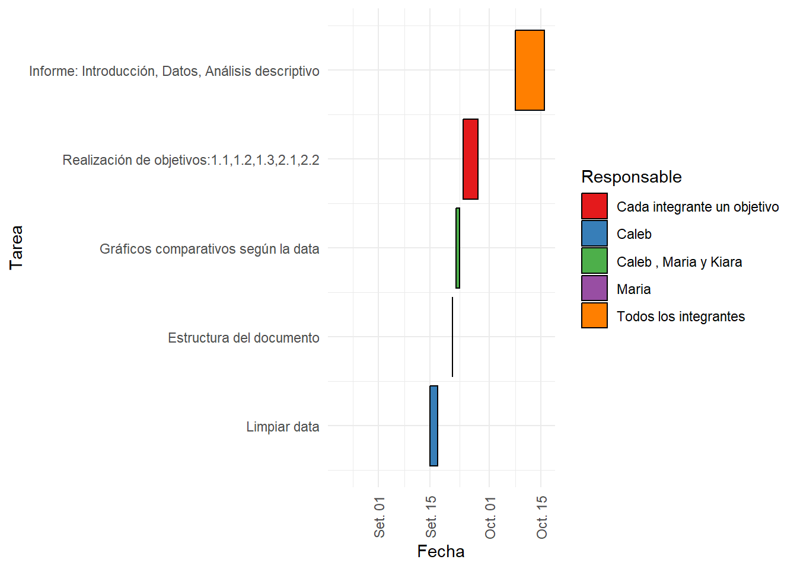
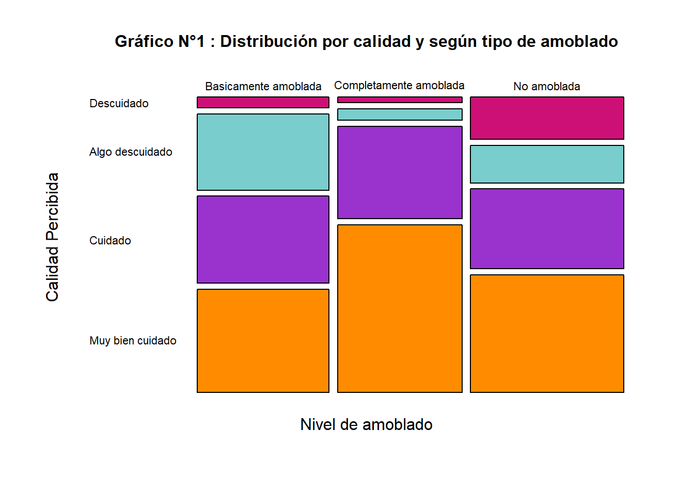
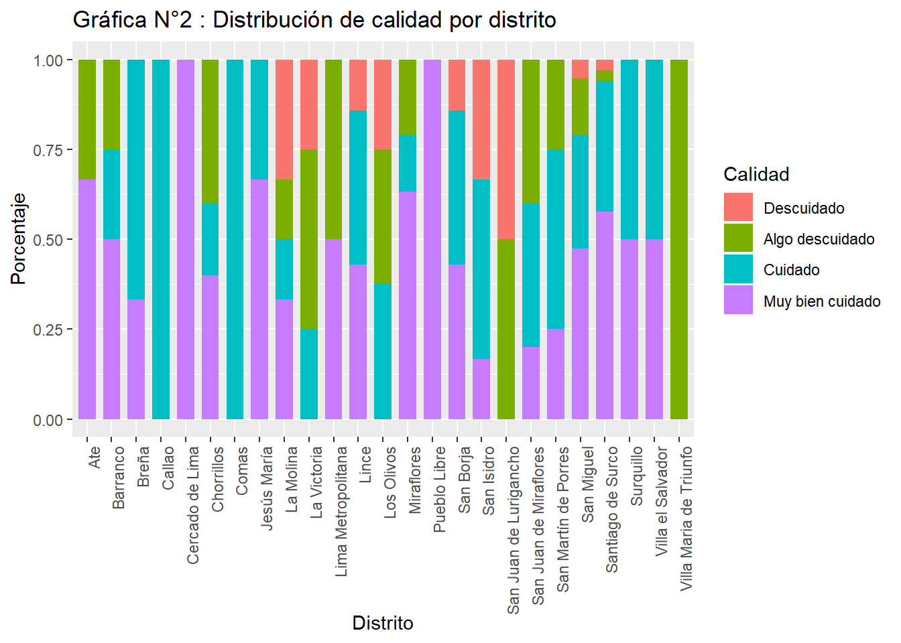
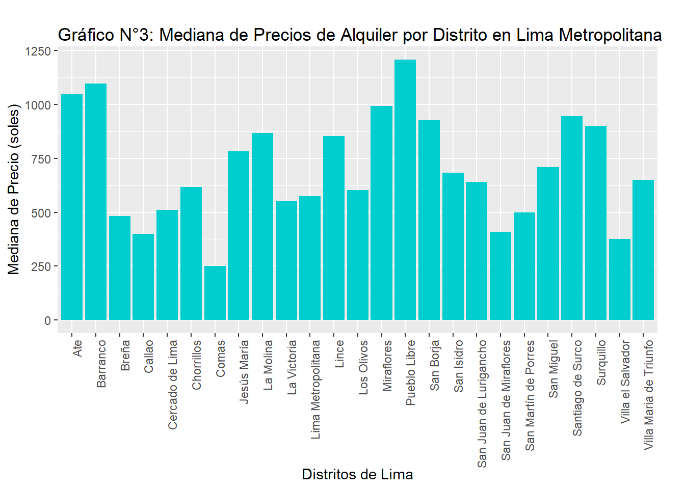
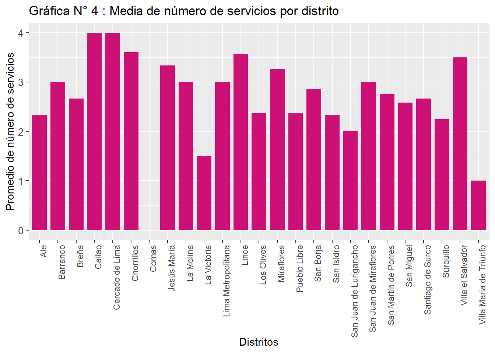
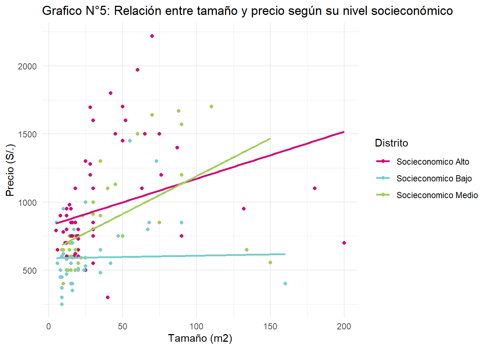
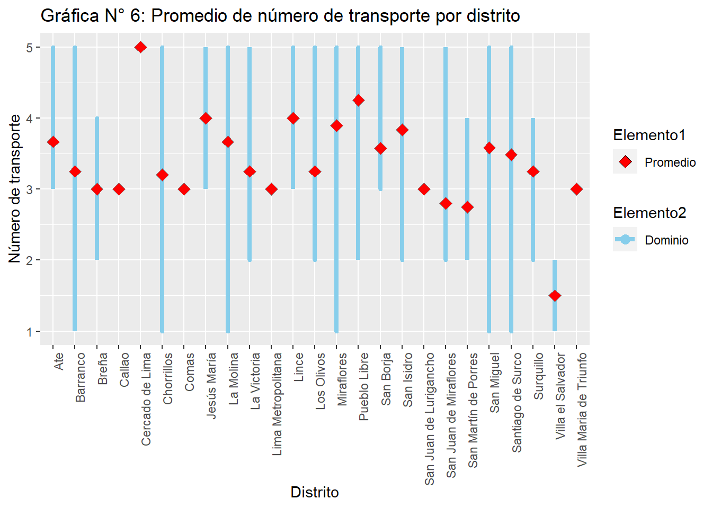
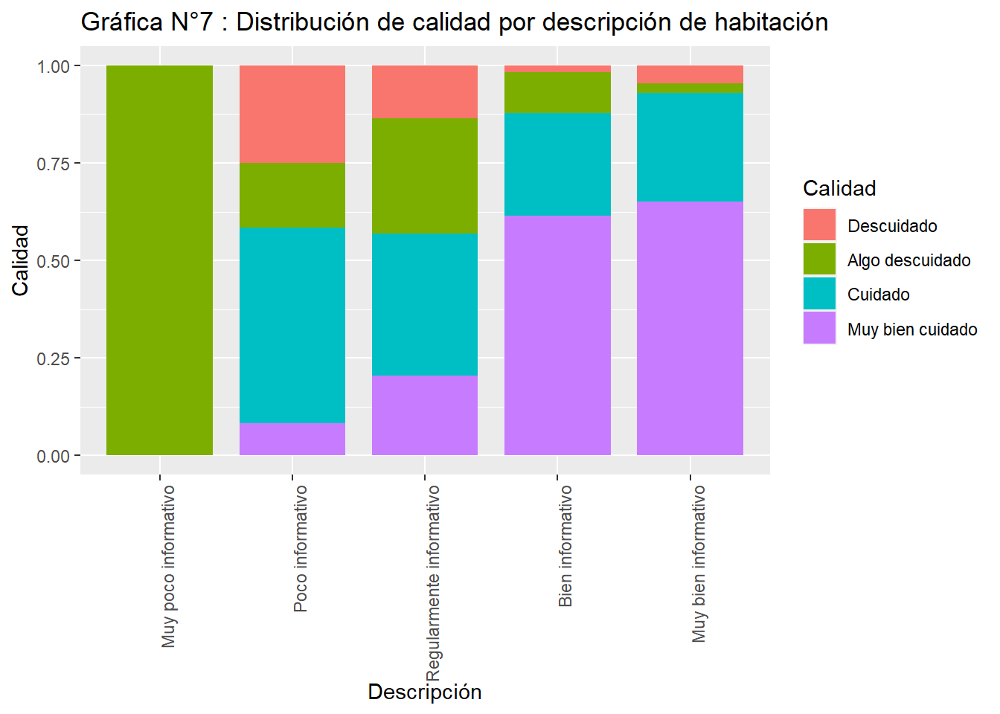

#Instalación de librerías necesarias
library(ggplot2)
library(stringr)
library(readxl)
library(knitr)
library(dplyr)Evaluación de la Calidad de Habitaciones para Estudiantes en Lima en el Año 2023: Un Análisis Post-Pandemia
G07 Calidad de Habitaciones
library(readr)
BD <- read_csv("BD.csv")| Nombre y Apellidos | Código de Estudiante | Correo Electrónico |
|---|---|---|
| Caleb Churata Berna (Lider) | 202202131 | caleb.churata@utec.edu.pe |
| Anthuanett Kiara Viracocha Cruz | 202220276 | anthuanett.viracocha@utec.edu.pe |
| Ann Pauline Lliuya Castillon | 202120322 | ann.lliuya@utec.edu.pe |
| Leonardo Galvez Martinez | 202110135 | leonardo.galvez@utec.edu.pe |
| Maria Isabel Quinte Medina | 202120459 | maria.quinte@utec.edu.pe |
1 Introducción
1.1 Relevancia
Nuestro proyecto busca analizar las características de las habitaciones disponibles para alquiler en Lima Metropolitana, 2023, con el objetivo de proporcionar a los estudiantes universitarios una visión clara y completa que les permita tomar decisiones informadas sobre su alojamiento. En el contexto actual, donde los estudiantes pueden tener horarios y responsabilidades variadas, es crucial que tengan acceso a información detallada y precisa sobre sus opciones de alojamiento. Nuestro estudio se centrará en diversas características de las habitaciones, como la ubicación, el precio, la proximidad a las universidades y la disponibilidad de servicios adicionales.
1.2 Objetivo general
Recopilar y presentar datos sobre habitaciones y departamentos disponibles para alquiler en diversas ubicaciones cercanas a universidades en Lima Metropolitana, año 2023, permitiendo a los estudiantes universitarios explorar y seleccionar opciones de vivienda que se ajusten a sus preferencias y presupuesto.
1.3 Objetivos especificos
- Evaluar la calidad de las habitaciones para estudiantes universitarios en Lima Metropolitana, año 2023, con el fin de identificar opciones óptimas para su bienestar y comodidad.
- Investigar en profundidad los diversos factores que impactan en el precio de alquiler de habitaciones destinadas a estudiantes universitarios en Lima Metropolitana, año 2023, desentrañando los secretos detrás de las tarifas y proporcionando valiosas perspectivas sobre la economía de alquiler en la ciudad.
- Determinar si las características de las habitaciones en alquiler en Lima se ajustan a las necesidades y preferencias de los estudiantes universitarios, garantizando una experiencia de vida académica y personal satisfactoria.
1.4 Planificación
Para realizar este proyecto elaboramos un diagrama de Gantt donde se muestra nuestros progresos de acuerdo a las fechas de inicio y fin de las distintas actividades para el desarrollo del proyecto.
── Attaching core tidyverse packages ──────────────────────── tidyverse 2.0.0 ──
✔ forcats 1.0.0 ✔ tibble 3.2.1
✔ lubridate 1.9.2 ✔ tidyr 1.3.0
✔ purrr 1.0.1
── Conflicts ────────────────────────────────────────── tidyverse_conflicts() ──
✖ dplyr::filter() masks stats::filter()
✖ dplyr::lag() masks stats::lag()
ℹ Use the conflicted package (<http://conflicted.r-lib.org/>) to force all conflicts to become errorsWarning: Removed 2 rows containing missing values (`geom_rect()`).
1.5 Recolección de datos
| Paso | Descripción |
|---|---|
| 1 | Definición de variables: Se elaboro las variables a considerar para la recolección de datos de ambientes en alquiler para estudiantes en Lima Metropolitana en 2023. |
| 2 | Fuentes de Información: La lista se fue generando a partir de diversas fuentes en linea, incluyendo anuncios en línea y agencias inmobiliarias. |
| 3 | Selección de Estrategias: Esta estrategia se eligió para garantizar la representativo y diversidad en la muestra, realizando para eso una debida limpieza de datos. |
| 4 | Condiciones Específicas: La recolección de datos se llevó a cabo durante un período específico en 2023, considerando la disponibilidad y variabilidad estacional,de acorde a nuestras variables definidas. |
| 5 | Diversidad de la Muestra: La estrategia incluyó diferentes fuentes y condiciones, asegurando la inclusión de ambientes destinados a estudiantes. |
1.6 Población
Todos los ambientes en alquiler para estudiantes o universitarios de Lima Metropolitana en el año 2023.
1.7 Muestra
180 cuartos en alquiler en Lima Metropolitana en el año 2023.
1.8 Muestreo
Para llevar a cabo el muestreo, se obtendrá una lista de todos los ambientes en alquiler destinados a estudiantes en Lima Metropolitana durante el año 2023. Para realizar este proceso ser recopilara datos de diversas fuentes online, como anuncios en línea, agencias inmobiliarias, universidades y otros recursos disponibles.
1.9 Variables
| Variable | Descripción | Tipo de Variable | Restricciones Posibles |
|---|---|---|---|
| Distrito | Ubicación del ambiente a alquilar | Cualitativa (Nominal) | No puede ser un distrito que no pertenezca a Lima Metropolitana. No puede ser numérica. |
| Universidad | Universidad cercana a la habitación | Cualitativa (Nominal) | No pueden ser universidades diferentes a las existentes en Lima Metropolitana. No puede ser numérica. |
| Dias_de_publicación | Cantidad de días que ha estado publicada la oferta | Cuantitativa (Discreta) | No pueden ser negativo ni decimal. |
| Tiempo_transporte | Tiempo en desplazarse del cuarto a la universidad (minutos) | Cuantitativa (Continua) | No puede ser negativa, ni expresada en otra unidad diferente a minutos. |
| Transporte_bool | Existe o no existe transporte publico cercano | Cualitativa (Nominal) | No puede ser transporte privado. No puede ser numérica. |
| Transporte_int | Cantidad de transportes públicos | Cuantitativa (Discreta) | No puede ser negativa ni decimal. |
| Precio | Precio del alquiler por mes (soles) | Cuantitativa (Continua) | No puede estar expresada en otra moneda, ni ser de tipo carácter. |
| Tamaño | Dimensiones del cuarto (área en m²) | Cuantitativa (Continua) | No puede estar en una unidad diferente a metros cuadrados (m²), ni negativa. |
| Servicios | Cantidad de servicios adicionales | Cuantitativa (discreta) | No puede ser decimal ni carácter, tampoco negativa. |
| Tiendas | Cantidad de tiendas o centros de abastecimientos cercanos | Cuantitativa (Discreta) | No puede ser negativa ni decimal. No puede ser carácter. |
| Distancia | Distancia del cuarto a la universidad (km) | Cuantitativa (Continua) | No puede ser negativa ni en otra unidad diferente a Kilómetros (Km) |
| Amoblado | Comodidad de habitación (amoblado, semi amoblado, no amoblado) | Cualitativa (Nominal) | No puede ser numérica ni diferente a las opciones de selección. |
| Baño | Disponibilidad del servicio higiénico (compartido, privado, no aplica) | Cualitativa (Nominal) | Solo puede ser de entre las opciones disponibles (compartido, privado, no aplica) |
| confiabilidad_servicios | Nivel de confiabilidad de los servicios de Internet y electricidad | Cualitativa (Ordinal) | Solo puede estar entre la escala numérica establecida en en la encuesta (1 al 5). |
| Calidad_habitacion | Estado de mantenimiento (muy deteriorado, muy bien mantenido) | Cualitativa (Ordinal) | Solo puede estar entre la escala numérica establecida en en la encuesta (1 al 5). |
| Comunicacion | Facilidad de comunicaciones con el propietario o arrendador | Cualitativa (Ordinal) | Solo puede estar entre la escala numérica establecida en en la encuesta (1 al 5). |
| Descripcion | Valoración de la descripción de la habitación (escala del 1 al 5) | Cualitativa (Ordinal) | Solo puede estar entre la escala numérica establecida en en la encuesta (1 al 5). |
| Roomate | Estilo de alquiler, si es para solamente hombres o mujeres o sin roomate. | Cualitativa (Nominal) | Solamente puede ser: Solo Damas, Hombres, Cualquiera o no menciona. |
| Fumar | Aceptación de fumadores (sí, no) | Cualitativa (Nominal) | Solamente puede ser Sí o No. |
| Mascotas | Aceptación de mascotas (sí, no) | Cualitativa (Nominal) | Solamente puede ser Sí o No. |
| Fiesta | Tolerancia a fiestas en la habitación (sí, no) | Cualitativa (Nominal) | Solamente puede ser Sí o No. |
| Niños | Aceptación de niños (sí, no) | Cualitativa (Nominal) | Solamente puede ser Sí o No. |
| Sitio_web | Presencia de sitio web de la oferta (sí, no) | Cualitativa (Nominal) | No puede ser un dato diferente a url. |
1.10 Limpieza de datos
Después de realizar nuestra recolección de datos, obtuvimos un DataSet llamado Evaluación de la calidad de habitaciones para estudiantes en Lima en el 2023, para tener una mejor visualización de nuestros datos y diferentes cambios en nuestro DataSet:
1.10.1 Cambio de nombres:
- Cambio de nombre del DataSet de
Evaluación de la calidad de habitaciones para estudiantes en Lima en el 2023aBD. - Cambio de nombre de todas las variables, pues tenían por nombre la pregunta que se realizo para obtener la información, se cambio a un nombre mas corto y entendible. Usando la función
colnames(), por ejemplo:colnames(BD)[5] = "Universidad"-> Cambio de nombre de la variable 5 a “Universidad”. Se hizo de la misma manera con las 22 variables restantes. Las 2 primeras corresponden a la marca temporal y el nombre de la persona que realizo la encuesta.
1.10.2 Verificación y normalización de datos:
- Primero se verificó que
BDno tenga datos incompletos, para eso se utilizó la funciónsum(!complete.cases(BD))y se obtuvo que no hay datos incompletos. - Se verificó con la función
unique()que las variablesUniversidadyDistritotenían datos mal escritos:Universidad: Al ser todas siglas de universidades, usamos la funcióntoupper()para que todas las siglas estén en mayúsculas, reduciendo así la cantidad de categorías. Sin embargo, se encontraron datos como:ULque hace referencia a la Universidad de Lima ->ULIMA.Distrito: Para normalizar esta variable usamosstr_to_title()de la libreríastringr. Posteriormente tuvimos que corregir algunas incidencias mal escritas como por ejemplo:Chorrrillos"->Chorrillos".
- Para las variables numéricas, luego de usar la función
str()para ver el tipo de dato, se encontró que las variablesPrecioyDistanciaestaban comochr, por lo que se usó la funciónas.numeric()para convertirlos anum. - Por ultimo para dejar prolija y para su uso en nuestra investigación las variables de tipo
chrse convirtieron afactorusando la funciónas.factor().
Por ultimo, mostramos la base de datos final con la función str():
2 Análisis descriptivo
A continuación, procederemos a ofrecer una detallada exposición de los diversos elementos gráficos y numéricos destinados a ilustrar nuestras variables más significativas. Esta meticulosa presentación permitirá un análisis descriptivo profundo y enriquecedor para el cumplimiento de los objetivos establecidos en el presente trabajo de estudio.
Antes de ello mostraremos las variables seleccionadas para realizar un análisis de estas:
| Variable | Tipo de Variable |
|---|---|
| Distrito | Nominal |
| Amoblado | Nominal |
| Calidad_habitación | Ordinal |
| Precio | Continua |
| Numero de servicios | Discreta |
| Numero de transporte | Discreta |
| Dimensiones | Continua |
| Descripción | Ordinal |
2.1 Objetivos especificos
2.2 Evaluar la calidad de las habitaciones disponibles para estudiantes universitarios en Lima Metropolitana, con el fin de identificar opciones óptimas para su bienestar y comodidad.
Para el cumplimiento del presente objetivo, se evaluará las siguientes variables.
2.2.1 Relación entre amoblamiento de la habitación (tipo de habitación) y el sector al que pertenece el distrito
- La variable distrito es una variable cualitativa nominal que indica los distritos de Lima en los que se realizó el estudio.
- La variable Amoblado es una variable cualitativa nominal que muestra la conservación de la habitación (No amoblado,Básicamente amoblado,Completamente amoblado)
Agrupamos los distritos de Lima en 4 divisiones según su ubicación:
- Lima Norte : Los Olivos, San Martín de Porres, Comas, Callao.
- Lima Sur : San Juan de Miraflores, Villa María del Triunfo, Villa el Salvador.
- Lima Este : Ate, San Juan de Lurigancho.
- Lima Oeste : Breña, Cercado de Lima, Jesús María, La Molina, La Victoria, Lince, Lima Metropolitana, Miraflores, Barranco, Chorrillos, San Borja, Santiago de Surco, San Isidro, San Miguel, Surquillo, Pueblo Libre.
BD <- BD %>%
mutate(Zona = case_when(
Distrito %in% c("Ate", "San Juan de Lurigancho") ~ "Lima Este",
Distrito %in% c("Callao", "Comas", "Los Olivos", "San Martín de Porres") ~ "Lima Norte",
Distrito %in% c("San Juan de Miraflores", "Villa María del Triunfo", "Villa el Salvador") ~ "Lima Sur",
Distrito %in% c("Breña", "Cercado de Lima", "Jesús María", "La Molina", "La Victoria", "Lince", "Lima Metropolitana", "Miraflores", "Barranco", "Chorrillos", "San Borja", "Santiago de Surco", "San Isidro", "San Miguel", "Surquillo", "Pueblo Libre") ~ "Lima Oeste",
))
write.csv(BD, "BD_con_Zona.csv")data_df <- data.frame(Distrito = BD$Zona, Amoblado = BD$Amoblado)
tabla_contingencia_df <- table(data_df)
tabla_df <- as.data.frame.matrix(tabla_contingencia_df)
titulo <- "Tabla 1: Distribución de Amoblamiento por Lugar"
cat(titulo, "\n\n")Tabla 1: Distribución de Amoblamiento por Lugar knitr::kable(tabla_df, caption = titulo)| Basicamente amoblada | Completamente amoblada | No amoblada | |
|---|---|---|---|
| Lima Este | 1 | 1 | 3 |
| Lima Norte | 4 | 1 | 9 |
| Lima Oeste | 43 | 44 | 44 |
| Lima Sur | 3 | 2 | 2 |
Análisis:
Podemos observar que el mejor sector de Lima para alquilar una habitación es Lima Oeste ya que cuenta con 44 habitaciones completamente amobladas y 44 habitaciones básicamente amobladas, de nuestra muestra de 180 habitaciones.
El peor sector de Lima para alquilar una habitación es Lima Este ya que cuenta con 3 habitaciones no amobladas y 1 habitación básicamente amoblada, de nuestra muestra de 180 habitaciones.
2.2.2 Relación entre amoblamiento de la habitación (tipo de habitación) y calidad de habitación
La variable tipo de amoblado es una variable cualitativa nominal que indica el nivel de amoblamiento de dicha habitación (no amoblado, básicamente amoblado y completamente amoblado).
La variable calidad de habitación es una variable cuantitativa ordinal que muestra la conservación de la habitación en alquiler (2: Descuidado , 3: Algo descuidado , 4: Cuidado , 5: Muy bien cuidado)
BD$Calidad_habitacion <- factor(BD$Calidad_habitacion, levels = c(2, 3, 4, 5),
labels = c("Descuidado", "Algo descuidado", "Cuidado", "Muy bien cuidado"))
tabla_contingencia <- table(Calidad_habitacion = BD$Calidad_habitacion, Amoblado = BD$Amoblado)
tabla_df <- as.data.frame.matrix(tabla_contingencia)
titulo <- "Tabla 2 : Calidad de habitación por amoblado"
cat(titulo, "\n\n")Tabla 2 : Calidad de habitación por amoblado kable(tabla_df, caption = titulo, col.names = c("Básicamente Amoblada", "Completamente Amoblada", "No amoblado"))| Básicamente Amoblada | Completamente Amoblada | No amoblado | |
|---|---|---|---|
| Descuidado | 2 | 1 | 9 |
| Algo descuidado | 14 | 2 | 8 |
| Cuidado | 16 | 16 | 17 |
| Muy bien cuidado | 19 | 29 | 25 |
Amoblado <- BD$Amoblado
Calidad <- BD$Calidad_habitacion
colores <- c("deeppink3", "darkslategray3", "#9A32CD", "darkorange") # Definición de paleta de colores
mosaicplot(table(Amoblado, Calidad),
main = "",
cex.axis = 0.7, # Ajustar el tamaño del texto en el eje y
las = 1, # Orientación vertical para el eje x, horizontal para el eje y
color = colores,
ylab = "Calidad Percibida",
xlab = "Nivel de amoblado")
title(main = "Gráfico N°1 : Distribución por calidad y según tipo de amoblado", cex.main = 1)
Análisis:
- Podemos observar que el mejor tipo de amoblado para alquilar una habitación es Completamente Amoblada ya que cuenta con 44 habitaciones completamente amobladas y 44 habitaciones básicamente amobladas, de nuestra muestra de 180 habitaciones.
2.2.3 Relación entre la calidad media de las habitaciones en alquiler por distrito
Tomar en cuenta el promedio de calidad de las habitaciones en alquiler por distrito se convierte en un factor relevante al momento de elegir la ubicación para alquilar una habitación en Lima, especialmente para estudiantes.
- La variable de calidad de habitación es una variable cualitativa ordinal que indica el nivel conservación de la habitación de una escala del 2 a 5, (2 :Descuidado, 3: Algo descuidado, 4: Cuidado, 5:Muy bien cuidado).
- La variable distrito es una variable cualitativa nominal que indica los distritos de Lima Metropolitana.
Distrito<-BD$Distrito
Calidad <-BD$Calidad_habitacion
tabla_contingencia <- table(Distrito, Calidad)
chi_squared_test <- chisq.test(tabla_contingencia)Warning in chisq.test(tabla_contingencia): Chi-squared approximation may be
incorrectgrafico_barras <- ggplot(data = BD, aes(x = Distrito, fill = factor(Calidad))) +
geom_bar(position = "fill", width = 0.7) +
labs(title = "Gráfica N°2 : Distribución de calidad por distrito",
x = "Distrito",
y = "Porcentaje",
fill = "Calidad") +
theme(axis.text.x = element_text(angle = 90, hjust = 1))
print(grafico_barras)
Análisis:
- Observamos que el distrito con habitaciones en alquiler muy bien cuidado es Pueblo Libre y Cercado de Lima ,en cambio el distrito con las habitaciones descuidadas en alquiler es Villa María del Triunfo y San Juan de Lurigancho.
2.3 2. Investigar en profundidad los diversos factores que impactan en el precio de alquiler de habitaciones destinadas a estudiantes universitarios en Lima, desentrañando los secretos detrás de las tarifas y proporcionando valiosas perspectivas sobre la economía de alquiler en la ciudad.
Con el fin de alcanzar este segundo objetivo establecido, se llevará a cabo un análisis de las siguientes variables.
2.3.1 Relación del precio de alquiler y el distrito
-El precio de alquiler es una variable cuantitativa continua que varía significativamente de un distrito a otro. Comprender esta relación es esencial para las personas interesadas en alquilar una habitación, ya que les permite evaluar si un distrito específico se ajusta a su presupuesto y capacidad de pago.
resultados_mediana <- BD %>%
group_by(Distrito) %>%
summarize(Promedio = mean(Precio))
resultados_iqr <- BD %>%
group_by(Distrito) %>%
summarize(IQR = IQR(Precio))
df_mediana <- data.frame(Distrito = resultados_mediana$Distrito, Mediana = resultados_mediana$Promedio)
df_iqr <- data.frame(Distrito = resultados_iqr$Distrito, IQR = resultados_iqr$IQR)
tabla_contingencia <- full_join(df_iqr, df_mediana, by = "Distrito")
#Se calcula el rango intercuartílico para saber que tan dispersos están los precios por distritos y con ese determinar que medida de tendencia central es la más adecuada para comparar estas dos variables
colnames(tabla_contingencia) <- c("Distrito","Rango Intercuartílico","Mediana")
kable(tabla_contingencia, caption = "Tabla 3: Medidas de resumen del precio de alquiler por distrito", align = c("l", "r", "r"))| Distrito | Rango Intercuartílico | Mediana |
|---|---|---|
| Ate | 300.00 | 1050.0000 |
| Barranco | 507.50 | 1097.5000 |
| Breña | 25.00 | 483.3333 |
| Callao | 0.00 | 400.0000 |
| Cercado de Lima | 0.00 | 510.0000 |
| Chorrillos | 110.00 | 616.0000 |
| Comas | 0.00 | 250.0000 |
| Jesús María | 125.00 | 783.3333 |
| La Molina | 87.50 | 866.6667 |
| La Victoria | 50.00 | 550.0000 |
| Lima Metropolitana | 25.00 | 575.0000 |
| Lince | 325.00 | 852.8571 |
| Los Olivos | 65.00 | 603.7500 |
| Miraflores | 290.00 | 993.6842 |
| Pueblo Libre | 630.75 | 1208.8750 |
| San Borja | 350.00 | 925.7143 |
| San Isidro | 162.50 | 683.5000 |
| San Juan de Lurigancho | 160.00 | 640.0000 |
| San Juan de Miraflores | 0.00 | 410.0000 |
| San Martín de Porres | 175.00 | 500.0000 |
| San Miguel | 300.00 | 709.7368 |
| Santiago de Surco | 800.00 | 944.3939 |
| Surquillo | 125.00 | 900.0000 |
| Villa Maria de Triunfo | 0.00 | 650.0000 |
| Villa el Salvador | 75.00 | 375.0000 |
ggplot(tabla_contingencia, aes(x = Distrito, y = Mediana)) +
geom_bar(stat = "identity", fill = "#00CDCD") +
theme(axis.text.x = element_text(angle = 90, hjust = 1),
plot.title = element_text(margin = margin(b = 2)),
plot.margin = margin(20, 20, 5, 5)) +
labs(title = "Gráfico N°3: Mediana de Precios de Alquiler por Distrito en Lima Metropolitana",
y = "Mediana de Precio (soles)",
x = "Distritos de Lima")
Análisis:
De dicha tabla deducimos que Pueblo Libre tiene la mayor mediana, es decir, el mayor precio de alquiler de habitación, que asciende a 1208.8750 soles.
Identificamos que el menor precio de alquiler de habitación es de 250 soles y le pertenece a Comas.
En resumen, los precios de las habitaciones pueden estar influenciados por diversos factores, como el amoblamiento, el tamaño de la habitación o incluso la zona en donde se ubica la habitación. Por lo tanto, las habitaciones en el distrito de Pueblo Libre, relacionadas con el precio, deberían ofrecer una mayor comodidad al estudiante.
2.3.2 Relación del número de servicios por distrito
- La variable número de servicios es una variable cuantitativa discreta que indica la cantidad de servicios con los que contará la habitación en alquiler, como, agua, luz, Internet y seguridad.
- La variable distrito permitirá analizar la cantidad de servicios de las habitaciones en alquiler y evaluar en que zona les conviene alquilar a los universitarios de Lima teniendo en cuenta este aspecto.
servicios=BD$Servicios
distrito=BD$Distrito
promedios_por_servicio <- aggregate(servicios~ distrito, BD, mean)
grafico_barras2 <- ggplot(promedios_por_servicio, aes(x = distrito, y = servicios)) +
geom_bar(stat = "identity", fill = "#CD1076", width = 0.8) + # Ajustar el ancho de las barras
labs(title = "Gráfica N° 4 : Media de número de servicios por distrito",
x = "Distritos",
y = "Promedio de número de servicios")
grafico_barras2 +
theme(axis.text.x = element_text(angle = 90, hjust = 1)) + # Rotar nombres en el eje x
scale_x_discrete(labels = function(x) str_wrap(x, width = 40)) + # Envolver nombres con str_wrap
theme(axis.text.y = element_text(size = 10)) # Ajustar el tamaño del texto en y
Análisis:
El distrito con el mayor número de servicios en las habitaciones en alquiler es Callao, seguido por Cercado de Lima, ambos con 4 servicios.Por otro lado, los distritos con el menor número de servicios adicionales son Comas, que no cuenta con ningún servicio, y Villa María del Triunfo, con solo 1 servicio adicional.
Es importante destacar que la mayoría de los distritos, a excepción de Comas y Villa María del Triunfo, tienen entre 1 y 3 servicios adicionales.
2.3.3 Relación entre el tamaño de la habitación y el precio de alquiler
Agrupamos los distritos de Lima en 3 grupos socioeconónomicos según Peru Telegraph:
Alto grado socioeconómico : Barranco, Miraflores, San Isidro, San Borja, Santiago de Surco.
Grado socioeconómico medio : Lince, San Miguel, Jesús María, La Molina, Pueblo Libre.
Bajo grado socioeconómico : San Martín de Porres, Breña, San Juan de Miraflores, Surquillo, Ate, Chorrillos, La Victoria, Cercado de Lima, Villa Maria de Triunfo, San Juan de Lurigancho, Villa el Salvador, Los Olivos, Comas.
precio <- BD$Precio # Cauntitativa continua
tamaño <- BD$Tamaño # Cuantitativa continua
distrito <- BD$Distrito
# Agrupamos los distritos en 3 grupos
distrito <- as.factor(BD$Distrito)
distrito <- ifelse(distrito %in% c("Barranco", "Miraflores", "San Isidro", "San Borja", "Santiago de Surco"), "Socieconomico Alto", ifelse(distrito %in% c("Lince", "San Miguel", "Jesús María", "La Molina", "Pueblo Libre"), "Socieconomico Medio", "Socieconomico Bajo"))
ggplot(BD, aes(x = tamaño, y = precio, color = distrito)) + geom_point() + geom_smooth(method = "lm", se = FALSE) + scale_color_manual(values = c("Socieconomico Alto" = "deeppink3", "Socieconomico Medio" = "#A2CD5A", "Socieconomico Bajo" = "#79CDCD")) + labs(x = "Tamaño (m2)", y = "Precio (S/.)", color = "Distrito",title = "Grafico N°5: Relación entre tamaño y precio según su nivel socieconómico") + theme_minimal()`geom_smooth()` using formula = 'y ~ x'
Análisis:
Se aprecia que hay una correlación positiva entre el tamaño de la habitación y el precio de alquiler, es decir, a mayor tamaño de la habitación, mayor será el precio de alquiler. - El gráfico también muestra que los distritos de desarrollo alto tienen las viviendas más grandes y más caras, mientras que los distritos de desarrollo bajo tienen las viviendas más pequeñas y más baratas. Este tiene un comportamiento casi constante siendo la variación de precio muy pequeña. Los distritos de desarrollo medio se ubican en un rango intermedio entre los dos extremos.
Esto se puede explicar por las diferencias en la oferta y la demanda de los cuartos según el nivel socio económico de los distritos. Según el INEI, los distritos con mayor nivel socioeconómico son San Isidro, Miraflores, La Molina, Surco y San Borja, mientras que los distritos con menor nivel son Villa María del Triunfo, Villa El Salvador, San Juan de Lurigancho, Comas y Puente Piedra. Estos distritos tienen distintas características en cuanto a infraestructura, servicios, seguridad y calidad de vida, lo que influye en el valor de las propiedades.
2.4 Determinar si las características de las habitaciones en alquiler en Lima se ajustan a las necesidades y preferencias de los estudiantes universitarios, garantizando una experiencia de vida académica y personal satisfactoria.
Con el propósito de cumplir con nuestro último objetivo,analizaremos las siguientes variables:
2.4.1 Relación entre número de transporte público cercanos a la vivienda por distrito
La variable número de transporte público es una variable cuantitativa discreta, esta representa un aspecto importante a la hora de evaluar donde alquilar puesto que a mientras más opciones de transporte cercano haya, más fácil será desplazarse por la ciudad y acceder a lugares de trabajo, centros de estudios, centros de atención médica, áreas comerciales y áreas de recreación.
grafico_lineas <- ggplot(BD, aes(x = Distrito, y = Transporte_int, group = Distrito)) +
geom_line(aes(color = "Dominio"), size = 1.5) +
stat_summary(fun = mean, geom = "point", aes(shape = "Promedio", color = "Promedio"), size = 3, fill = "red") +
labs(title = "Gráfica N° 6: Promedio de número de transporte por distrito",
x = "Distrito",
y = "Número de transporte") +
theme(axis.text.x = element_text(angle = 90, hjust = 1)) + # Inclinar nombres en el eje x
scale_color_manual(name = "Elemento2", values = c("Dominio" = "skyblue", "P" = "red"), labels = c("Dominio", "Promedio")) + # Agregar leyenda de color
scale_shape_manual(name = "Elemento1", values = c("Promedio" = 23), labels = c("Promedio")) # Agregar leyenda de formaWarning: Using `size` aesthetic for lines was deprecated in ggplot2 3.4.0.
ℹ Please use `linewidth` instead.print(grafico_lineas)
Análisis:
Se observa que el Cercado de Lima presenta un mayor número de transportes cercanos a los dormitorios, mientras que Villa el Salvador cuenta con menos opciones.
Distritos como Barranco,Chorrillos,La Molina,Miraflores San Miguel y Santiago de surco ofrecen una mayor variedad de números de transportes cercanos a los dormitorios.
En general, la mayoría de los distritos ofrecen entre 3 y 4 opciones de transporte cerca de las habitaciones, lo cual beneficia a los estudiantes al facilitarles el traslado de un lugar a otro, como el traslado a su centro de estudios.
2.4.2 Relación entre la descripción y la calidad de la habitación
La variable descripción nos indica que tan informativo fue la descripción de cada habitación en alquiler proporcionada por el dueño en los diversos sitios web consultadas en el presente estudio, esta variables fue evaluada en la escala del 1 - 5, en donde 1: Muy poco informativo, 2: Poco informativo, 3:Regularmente informativo 4: Bien informativo y 5: Muy bien informativo.
BD$Descripcion <- factor(BD$Descripcion, levels = c(1, 2, 3, 4, 5),
labels = c("Muy poco informativo", "Poco informativo", "Regularmente informativo","Bien informativo", "Muy bien informativo"))
Descripcion<-BD$Descripcion
Calidad <- BD$Calidad_habitacion
grafico_barras_2 <- ggplot(BD, aes(x = Descripcion, fill = Calidad)) +
geom_bar(position = "fill", width = 0.8) +
labs(title = "Gráfica N°7 : Distribución de calidad por descripción de habitación",
x = "Descripción",
y = "Calidad",
fill = "Calidad") +
theme(axis.text.x = element_text(angle = 90, hjust = 1))
print(grafico_barras_2)
Análisis:
- En la siguiente gráfica se observa que las habitaciones con un mejor estado de calidad(muy bien cuidado) presentan una descripción de manera detallada e informativa.Sin embargo,las habitaciones algo descuidadas presenta muy poca información en sus descripciones.
3 Conclusiones
Es preciso resaltar que nuestras conclusiones están en base a nuestros objetivos:
En primer lugar,podemos decir que los distritos de Lima Oeste son los que presentan una mayor oferta de habitaciones en alquiler para estudiantes universitarios, siendo el distrito de Pueblo Libre el que presenta la mayor calidad de habitaciones en alquiler, sin embargo, el distrito de Comas presenta la menor calidad de habitaciones en alquiler.
Por otro lado, el distrito de Pueblo Libre es el que presenta la mayor mediana de precios de alquiler, mientras que el distrito de Comas presenta la menor mediana de precios de alquiler.En cuanto al tamaño de las habitaciones en alquiler, los distritos de nivel socio-económico alto tienden a ser más caras en relación a su tamaño y precio de alquiler que los distritos de nivel socio-económico bajo.
Por último,en cuanto al número de transportes cercanos a las habitaciones en alquiler, el Cercado de Lima destaca por tener el mayor número de transportes cercanos a los dormitorios, mientras que Villa el Salvador cuenta con menos opciones,en cuanto a la descripción de las habitaciones en alquiler, se observa que las habitaciones cuyas descripciones coinciden o guardan similitud con las proporcionadas por el anunciante exhiben un nivel de calidad positivo, superando el 50%. En contraste, aquellas habitaciones cuyas descripciones difieren significativamente suelen presentar condiciones de mantenimiento deficientes.